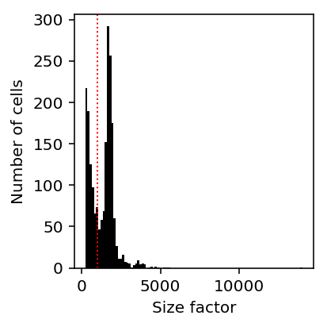

Mixture of negative binomials
Table of Contents
Introduction
Here, we use the EM algorithm to fit a mixture of negative binomials to count data.
The motivating example is explaining bimodal variation in spike-in molecule counts using the fact that the distribution of size factors is bimodal:

Setup
import numpy as np import pandas as pd import scipy.optimize as so import scipy.stats as st import scipy.special as sp import scqtl.simple
%matplotlib inline %config InlineBackend.figure_formats = set(['retina'])
import matplotlib.pyplot as plt plt.rcParams['figure.facecolor'] = 'w'
Methods
EM algorithm
The complete data model is:
\[ x_i \mid \lambda_i \sim \mathrm{Poisson}(\lambda_i) \]
\[ \lambda_i \mid z_i \sim \mu_{z_i} \mathrm{Gamma}(\phi_{z_i}^{-1}, \phi_{z_i}^{-1}) \]
def nb_llik(x, mean, inv_disp): return (x * np.log(mean / inv_disp + 1e-8) - x * np.log1p(mean / inv_disp) - inv_disp * np.log1p(mean / inv_disp) + sp.gammaln(x + inv_disp) - sp.gammaln(inv_disp) - sp.gammaln(x + 1)) def objective(theta, x, z): # Important: theta gets flattened by minimize n_components = z.shape[1] mean = np.exp(theta[:n_components]) inv_disp = np.exp(theta[n_components:]) return -(np.log(z + 1e-8) + nb_llik(x, mean, inv_disp)).sum() def check_result(opt): return (opt.success and np.isfinite(opt.fun) and np.isfinite(opt.jac).all()) def init(n_components, x, z): theta = np.random.normal(size=(2, n_components)) for j in range(n_components): theta[0,j] = np.log(x[z[:,j] > 0.5].mean()) return theta def mstep(theta, x, z): n_components = theta.shape[1] theta1 = np.zeros(theta.shape) x0 = init(n_components, x, z) for j in range(n_components): mstep = so.minimize(objective, x0=x0[:,j], args=(x, z[:,j])) if not check_result(mstep): raise RuntimeError('M step failed to converge') theta1[:,j] = mstep.x return theta1 def mix_nb(x, n_components=2, max_iters=1000, max_retries=10): """Fit mixture of negative binomials via EM""" x = x.reshape(-1, 1) n = x.shape[0] z = np.random.uniform(size=(n, n_components)) z /= z.sum(axis=1, keepdims=True) theta = init(n_components, x, z) obj = np.inf for i in range(max_iters): theta1 = mstep(theta, x, z) update = np.array([objective(t, x, z) for t in theta1.T]).sum() assert np.isfinite(update) if update > obj: raise RuntimeError('objective decreased') elif np.isclose(update, obj): print(f'{i}: {obj}') return z, theta, obj else: obj = update print(f'{i}: {obj}') theta = theta1 # E step z = sp.softmax(nb_llik(x, np.exp(theta[0]), np.exp(theta[1])), axis=1) raise RuntimeError('failed to converge')
Results
Simulation
Degenerate model
First, make sure the easy case (one component) works. Generate some Poisson data.
np.random.seed(1) x = np.random.poisson(lam=100, size=(1000, 1)) z = np.ones((x.shape[0], 1))
theta0 = init(1, x, z)
objective(theta0, x, z)
5430.563796635256
opt = so.minimize(objective, x0=theta0, args=(x, z), method='Nelder-Mead') assert opt.success {'fitted': np.exp(opt.x[0]), 'true': 100}
{'fitted': 100.66675997637512, 'true': 100}
Generate some negative binomial data.
np.random.seed(1) x = st.nbinom(n=3, p=1e-3).rvs(size=(1000, 1)) z = np.ones((x.shape[0], 1)) opt = so.minimize(objective, x0=theta0, args=(x, z), method='Nelder-Mead') assert opt.success {'fitted_mean': np.exp(opt.x[0]), 'true_mean': st.nbinom(n=3, p=1e-3).mean(), 'fitted_var': np.exp(2 * opt.x[0] - opt.x[1]), 'true_var': st.nbinom(n=3, p=1e-3).var()}
{'fitted_mean': 2978.7653010814693,
'true_mean': 2997.0,
'fitted_var': 2889291.139179591,
'true_var': 2997000.0}
Now make sure it works when we give the model more than the true number of components.
z = np.zeros((x.shape[0], 2)) z[:,0] = (np.random.uniform(size=z.shape[0]) < 0.5).astype(int) z[:,1] = 1 - z[:,0] theta0 = init(2, x, z) objective(theta0, x, z)
36078.88820426077
opt = so.minimize(objective, x0=theta0, args=(x, z), method='Nelder-Mead') assert opt.success opt.x
array([7.99922953, 1.12198022, 1.70447064, 0.38548806])
x[z[:,0].astype(bool)].mean(), np.exp(opt.x[0])
(2994.14859437751, 2978.741830944349)
x[~(z[:,0].astype(bool))].mean(), np.exp(opt.x[2])
(2963.430278884462, 8.322971383121208)